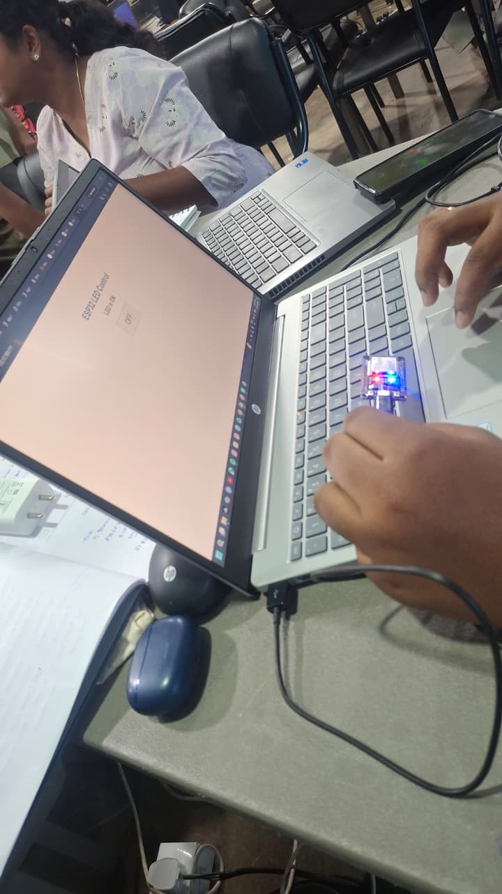
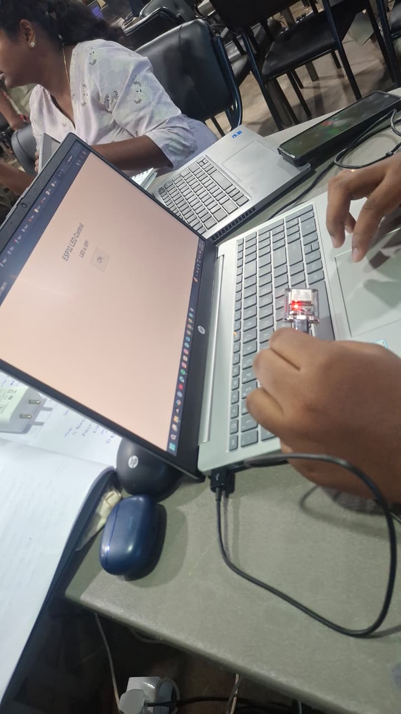

Project Overview
The objective of this assignment was to understand how an ESP32 can work as a local web server and provide a browser-based interface for controlling an electronic output.
I worked with the ESP32, programmed it using Arduino IDE, connected it to a Wi-Fi network and created a simple web interface. The interface was used to send commands from a browser to the ESP32 and control the connected output.
This helped me understand the relationship between embedded hardware, networking, HTTP requests and a web interface.
Concepts Learned
ESP32
ESP32 is a microcontroller with built-in Wi-Fi connectivity that can be used for embedded IoT applications.
Web Server
A web server receives requests from a client and provides an appropriate response. In this project, the ESP32 acts as the local web server.
Wi-Fi Communication
The ESP32 connects to Wi-Fi so that a browser connected to the same network can communicate with it.
HTTP Communication
Browser actions generate requests to the ESP32. The ESP32 processes the request and changes the required output.
System Architecture
The browser acts as the user interface. When the user selects an ON or OFF command, the request reaches the ESP32 web server. The ESP32 processes the request and changes the output state.
Tools Used
Hardware
- ESP32 development board
- Output / LED control circuit
- Connecting wires
- Computer for programming
Software
- Arduino IDE
- ESP32 board package
- Web browser
- Wi-Fi network
Hardware Setup
I first prepared the ESP32 hardware and connected the required output circuit. The connections were checked before uploading the program.
After the hardware was ready, I connected the ESP32 to the required Wi-Fi network. The ESP32 then provided a local network address that could be accessed through a browser connected to the same network.
Development Process
- I opened Arduino IDE and selected the ESP32 board.
- I prepared the ESP32 web-server program.
- The Wi-Fi credentials were configured in the program.
- The ESP32 was programmed to start a local web server.
- I created a basic HTML control interface containing ON and OFF controls.
- The browser sent a request when a control button was selected.
- The ESP32 received the request and processed the corresponding command.
- The output state was changed according to the selected command.
Browser Control Flow
This configuration allowed the ESP32 to be controlled locally through a browser without requiring a separate cloud dashboard.
Physical & Web Interface Evidence


The two photographs document the ON and OFF states of the ESP32-controlled output and provide practical evidence of the local web-control implementation.
Problems & Fixes
- Wi-Fi communication: The ESP32 and the device accessing the web interface had to be connected correctly for local communication.
- Hardware verification: The physical connections had to be checked before testing the control commands.
- Web interface testing: The ESP32 local network address had to be accessed correctly from the browser.
What I Learned
Through this assignment, I understood how an ESP32 can be used beyond simple hardware control by providing a browser-based interface.
I learned how embedded hardware, Wi-Fi networking, HTTP requests and an HTML interface can work together as an IoT system.
This assignment provided the foundation for the later cloud-based IoT work using Adafruit IO and Firebase.
Project Repository
This assignment page is maintained as part of my IoT Learning portfolio.
View Assignment on GitHub →